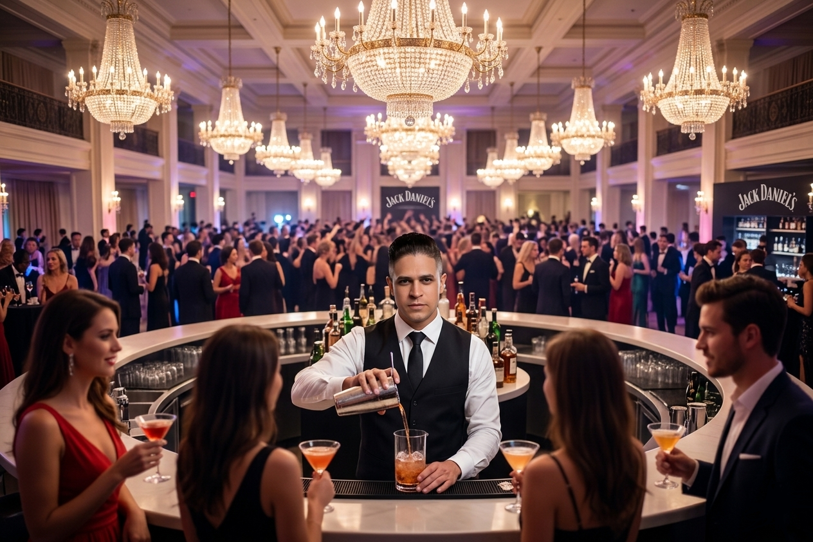
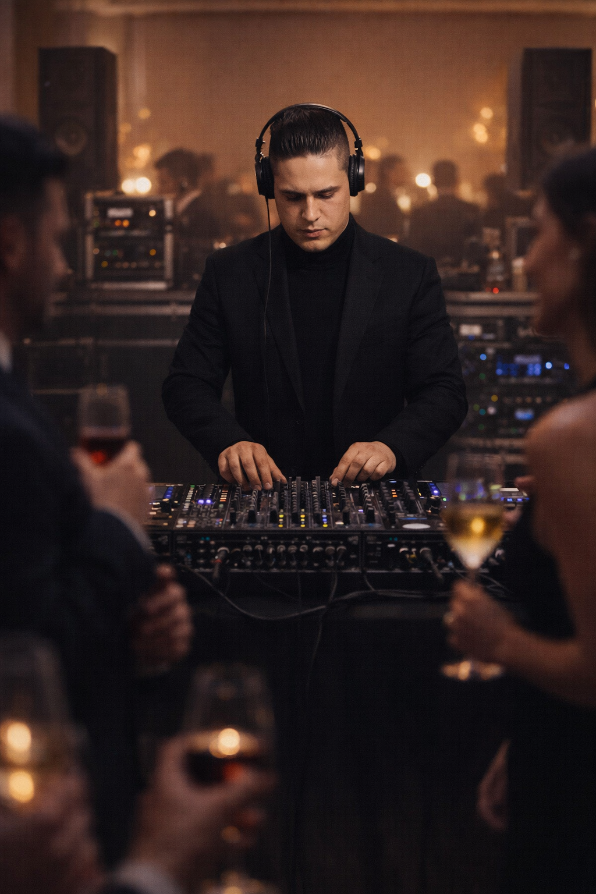
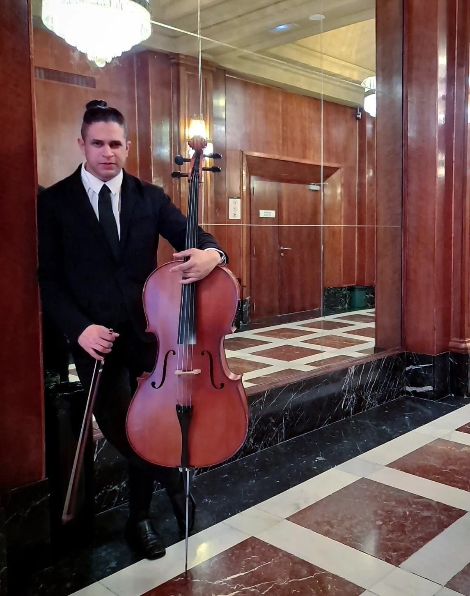

DJ para eventos
Selección musical para bodas, fiestas privadas, cumpleaños, eventos corporativos y celebraciones con baile.
Servicios para eventos
Una propuesta flexible para acompañar celebraciones, encuentros privados, eventos corporativos y momentos especiales con soluciones musicales, técnicas y de atención al invitado.

Servicios
Servicios adaptables para celebraciones privadas, bodas, fiestas, eventos corporativos, locales comerciales y experiencias especiales.
Selección musical para bodas, fiestas privadas, cumpleaños, eventos corporativos y celebraciones con baile.
Apoyo técnico de sonido para música, intervenciones, ambientación, presentaciones y distintos momentos del evento.
Servicio de bebidas y preparación básica de cócteles para celebraciones privadas, reuniones y eventos especiales.
Posibilidad de integrar violonchelo, voz u otros momentos musicales dentro de una propuesta más amplia para eventos.
Apoyo visual y ambiental para reforzar la estética del evento, especialmente en celebraciones con música y baile.
Orientación para combinar servicios, organizar momentos clave y adaptar la propuesta al espacio, duración y tipo de celebración.
Enfoque
Servicios orientados a acompañar momentos de recepción, cóctel, cena, baile y celebración general, según las necesidades del evento.
Propuestas adaptables para inauguraciones, eventos corporativos, acciones promocionales, encuentros profesionales y actividades en comercios.
Opciones flexibles para cumpleaños, aniversarios, reuniones familiares y celebraciones donde se busca música, ambiente y atención cercana.
Vídeos
Una selección de contenidos para conocer mejor el estilo, la presencia y las posibilidades de Yoan Darz Events.
Galería




Condiciones
Al solicitar el servicio, el cliente reconoce y acepta estas condiciones.
Contacto
Completa el formulario de solicitud de servicios para eventos y recibirás la respuesta por correo electrónico.
También puedes consultar disponibilidad, servicios o información adicional por mensajería directa.
Y, si lo deseas, acompaña la evolución de Yoan Darz Events y descubre nuevas propuestas, celebraciones y experiencias siguiéndome en redes sociales.